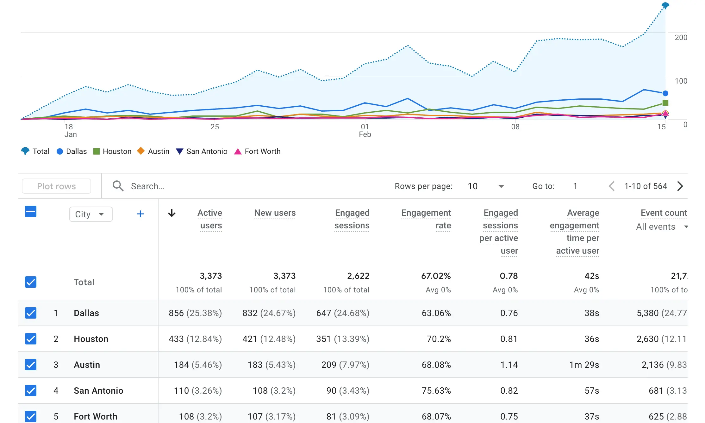

Case Study
Challenge:
Gubernatorial candidate entered 2026 primary race with zero digital presence after previous campaign manager locked website for ransom. Campaign had no infrastructure, no announcement, and no timeline. Competitor coverage continued to grow.
What I Built:
- Acquired new domain and deployed custom website in 24 hours, while continuously refining and updating over the coming months
- Created all social media accounts (e.g. TikTok, Instagram, Twitter), repurposed existing (i.e. Facebook), and defined content strategy
- Established campaign email & engagement intake form for voters, volunteers, reporters, and supporters
- Coordinated outreach to 75+ party clubs and organizations statewide
- Organized campaign announcement event and 30+ additional speaking engagements
- Dispatched campaign staffers and volunteers to attend events with candidate and capture video
- Authored 7 candidate questionnaire and endorsement screening responses — used in speeches (e.g. LWVTX, Greater Heights Dem Club, Dems of La Porte, Bexar County Young Dems, Area 5 Dems)
- Managed press relationships resulting in 14+ earned media stories
- Internal campaign messaging, calendar, meeting, and work sessions with operational security for a team of 10
Outcomes:
- #1 search ranking across multiple queries — outranking prior hostage site, as well as frontrunner who doesn't appear in results
- 14 earned media placements and interviews (e.g. CBS News Texas, Texas Tribune, Dallas Morning News, Houston Public Media, FOX26 Houston, KVUE-ABC Austin, SirusXM, FOX7 Austin)
- 75+ organizational relationships generating 30+ speaking engagements and endorsement opportunities
- 3rd place initial polling in crowded primary with 10 candidates
-
750+ site visits and 4.5K+ search impressions from Google alone, capturing significant traffic increase after 2nd place candidate dropped out of race:

- All infrastructure built for less than $100 in direct vendor costs vs $60K+ campaign spent on other consultants
- Site later repurposed as civic engagement tool now serving nearly 3K active voters from nearly 500 cities across Texas, with 4K user engagement events: 
How:
HTML/CSS/Javascript (no CMS bloat, mobile-optimized); aggressive search engine optimization (SEO); low-cost hosting; AI-augmented content production; collaborative document share; relentless stakeholder coordination; and curiosity-first / ship-first / refine-later mindset.
Timeline:
4 months, unpaid volunteer basis.
Testimonials:
“I'm going to hire you to build the website for all the campaigns I work on. It actually works and doesn't look like every other campaign site out there.”
“Thank you Abhi. We hated that [the candidate] could not join... but did enjoy hearing from you... Please stay in touch. Best of luck in the primary election.”
“I have grown to depend on you... no one has contributed more time or effort."